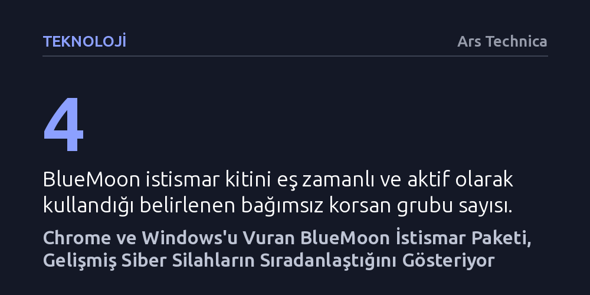

TEKNOLOJI · Ars Technica · 2026-09-11
Aralarında Çin bağlantılı aktörlerin de bulunduğu en az dört korsan grubu, Chromium ve Windows açıklarını birleştiren BlueMoon adlı aynı istismar zincirini kullanırken yakalandı. Yapay zekâ ve açık kaynak yama gecikmelerinden beslenen bu saldırı, eskiden nadir olan istismar zincirlerine erişim eşiğinin düştüğünü gösteriyor.
Eskiden yalnızca devlet bütçeleriyle geliştirilebilen son derece pahalı ve karmaşık tarayıcı saldırı zincirlerinin, yapay zekâ ve açık kaynak yama gecikmeleri nedeniyle artık çok sayıda grup tarafından hızla ve düşük maliyetle silaha dönüştürülebildiğini kanıtlıyor.

Siber güvenlik dünyasında sıfır gün açıklarını hedef alan saldırı zincirleri genellikle en değerli kozlar olarak görülür ve tespit edilmelerini geciktirmek için çok sınırlı operasyonlarda, büyük bir gizlilikle kullanılır. Ancak güvenlik şirketi Proofpoint araştırmacılarının ortaya çıkardığı son bulgular bu ezberi bozdu. Aralarında Çin hükümetiyle bağlantılı yapıların da yer aldığı en az dört bağımsız korsan grubunun, Chromium tabanlı tarayıcılar ile eski Windows sürümlerindeki kritik açıkları hedef alan neredeyse birebir aynı istismar kitini aktif biçimde kullandığı belirlendi.
Proofpoint tarafından 'BlueMoon' adı verilen bu saldırı kiti, alışılmış siber casusluk kampanyalarının aksine yüksek tespit izleri bırakarak ve hızla yayılarak sahaya sürüldü. Tespit edilen ilk saldırı 28 Ağustos tarihinde TA412 adlı grup tarafından başlatıldı; diğer korsan grupları ise eylül ayının ilk günlerinde benzer saldırılara girişti. Güvenlik uzmanları, devlet destekli aktörlerin böylesi değerli bir aracı eş zamanlı ve dikkatsizce paylaşmasının arkasında yatan nedenleri araştırmaya odaklandı.
BlueMoon'un hedefine ulaşması, birbirinden bağımsız üç farklı güvenlik açığının tek bir zincir halinde birbirine bağlanmasıyla mümkün oluyor. Saldırının ilk iki halkası, Google'ın açık kaynaklı JavaScript motoru V8 içerisinde yer alıyor. Saldırganlar önce V8 üzerindeki bir tip karmaşası (type confusion) hatasını (CVE-2026-85046) tetikliyor; ardından V8'in korumalı alanından kaçış (sandbox escape) yöntemini devreye sokarak tarayıcı kısıtlamalarını aşıp uzaktan kod çalıştırma kabiliyeti kazanıyor.
Tarayıcı seviyesinde kontrolü ele geçiren saldırganlar, son aşamada eski Windows sürümlerinin çekirdeğinde bulunan yerel yetki yükseltme açığından (CVE-2026-85880) yararlanıyor. Windows 10'un eski sürümleri (Ekim 2018 güncellemesi ve 2004 sürümü), Windows Server 2019, Windows Server 2022 ve Windows 11'in ilk sürümünü etkileyen bu son halka, zararlı kodların işletim sisteminde en üst düzey olan sistem yetkileriyle çalıştırılmasını sağlıyor. Böylece hedeflenen bilgisayara istenen herhangi bir zararlı yazılım tam yetkiyle yüklenebiliyor.
Saldırganların bu güçlü zinciri gizlemek yerine böylesine agresif biçimde sahaya sürmesinin ardında iki kritik etken bulunuyor. Bunlardan ilki, Chromium tedarik zincirindeki 'yama boşluğu' (patch gap) olarak adlandırılan yapısal zafiyet. Açık kaynak kodlu Chromium projesinde bir açık kapatıldığında, yama kodu kaynak havuzunda kamuya açık hale geliyor. Ancak bu kodun derlenip Chrome ve Edge gibi tüketici tarayıcılarının kararlı sürümlerine entegre edilmesi belirli bir zaman alıyor. Korsanlar, açık kaynak kod havuzunu izleyip yayımlanan yamaları tersine mühendislikle çözerek tarayıcı güncellemeleri son kullanıcıya ulaşmadan önceki bu savunmasız pencereyi hızla istismar etti.
Sürecin bu kadar hızlanmasındaki ikinci ve belki de en önemli itici güç ise yapay zekâ oldu. Güvenlik analistleri, yapay zekâ ajanlarının kod tabanlarındaki açıkları insan araştırmacılardan çok daha hızlı keşfedebildiğine ve istismar geliştirme maliyetini kökten düşürdüğüne dikkat çekiyor. Normal şartlarda aylar süren ve milyonlarca dolarlık uzmanlık gerektiren tam teşekküllü bir tarayıcı istismar zinciri, yapay zekâ desteği sayesinde günler içinde üretilip birden fazla grubun eline geçebilecek bir meta haline geldi.
BlueMoon vakası, siber silahların geliştirilme ve yayılma dinamiklerinde yeni bir döneme girildiğini haber veriyor. Karmaşık tarayıcı açıklarının artık tekil aktörlerin tekelinde kalmadığı, devlet destekli casusluk odaklarından finansal suç şebekelerine kadar geniş bir yelpazeye hızla yayılabildiği görülüyor. Söz konusu üç açığın tamamı için son 24 saat içerisinde yamalar yayımlanmış olsa da sahadaki tehlike henüz geçmiş değil.
Proofpoint uzmanları, tarayıcıların ve işletim sistemlerinin güncellenmesi zaman aldığı için bu kitin kullanımının süreceğini öngörüyor. Araştırmacılar durumu şu sözlerle özetliyor: "Benimsenmesinin kolaylığı göz önüne alındığında, yamalı sürümler tüm Chromium tabanlı tarayıcılara tamamen dağıtılana kadar bu istismar kitinin daha da yaygınlaşması, hem casusluk hem de finansal kazanç motivasyonlu tehdit aktörlerince benimsenmesi muhtemel."